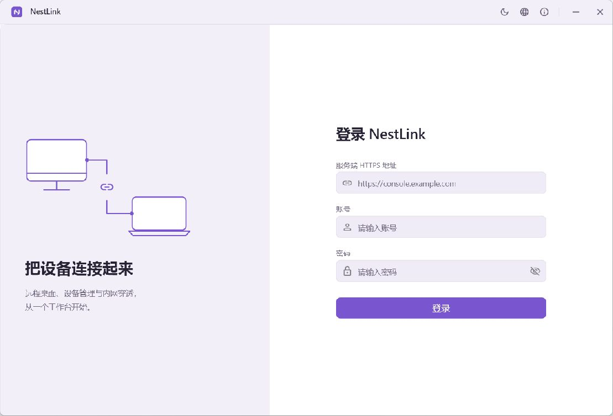
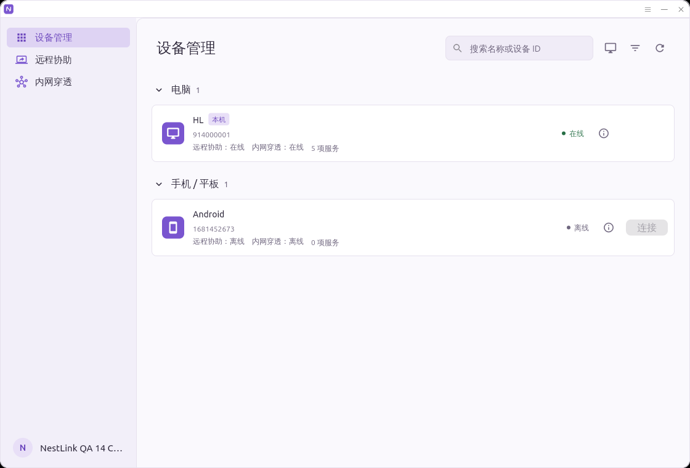
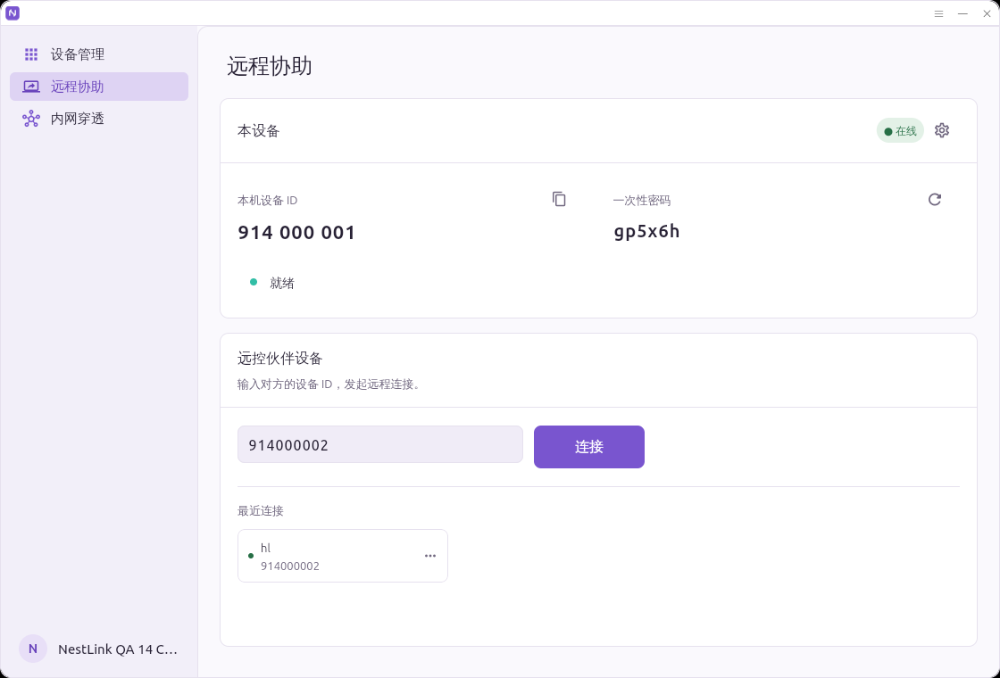
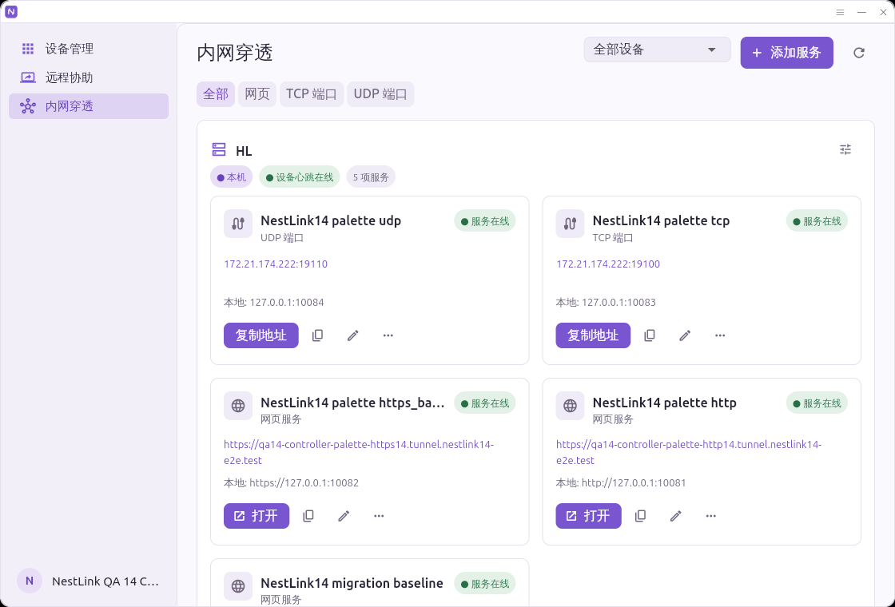
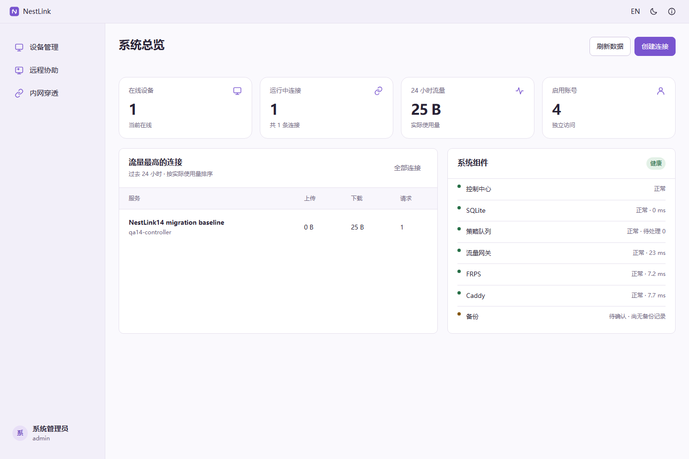
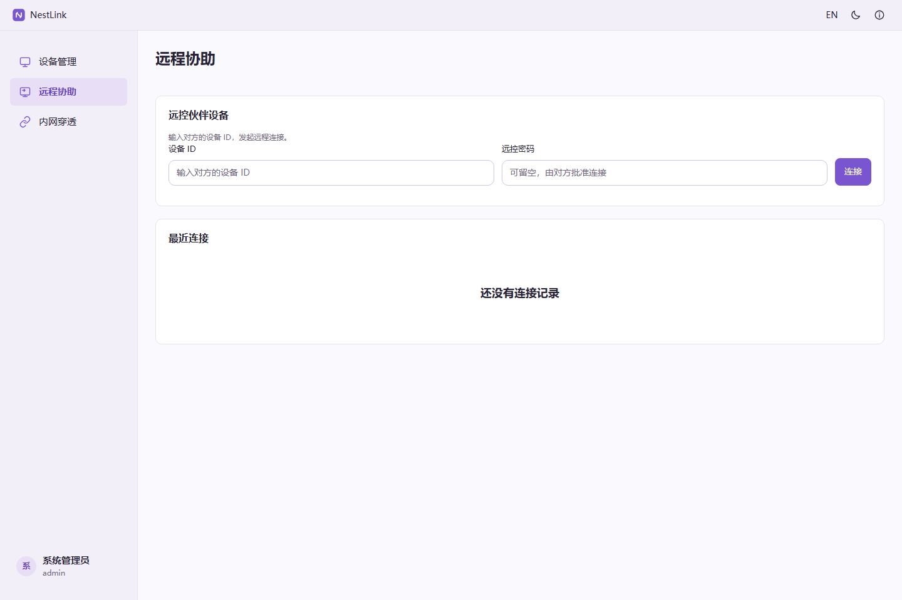
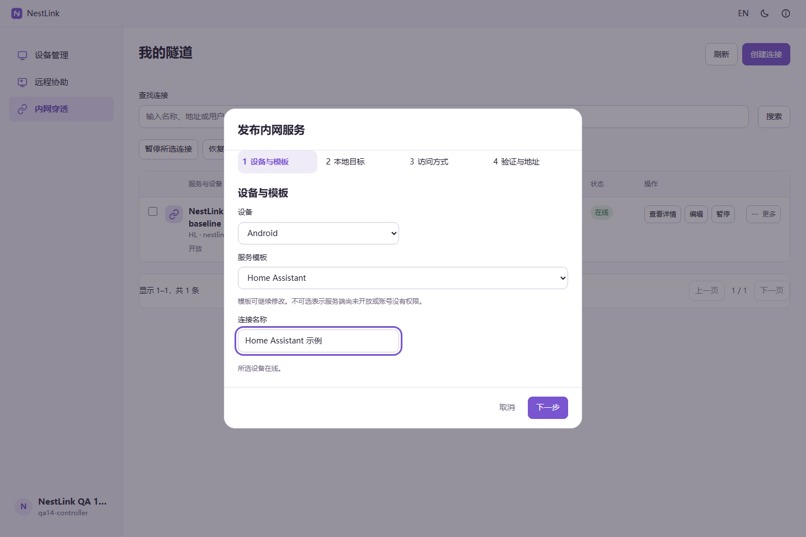
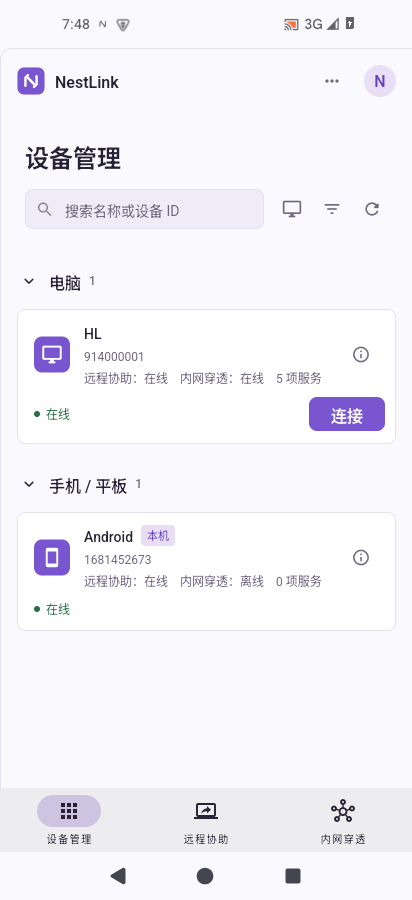

INTERFACE / 14.0.0
把每一种连接，放在合适的位置。
Windows 登录页，以及 Linux、Web 和 Android 的设备管理、远程协助与内网穿透界面。图片来自本版实际安装和运行的应用，使用示例账号与设备数据。








为日常使用整理界面
设备管理、远程协助与内网穿透使用统一名称，导航和账号入口适配各平台。
控件保持紧凑。内容可以正常滚动，右侧不显示上下滚动条。
手机导航随屏幕适配，主题与语言在各主要页面保持一致。